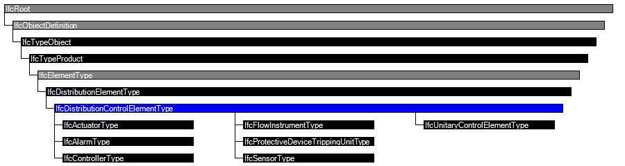

| Komponente der Gebäudeautomation (allgemein) - Typ |
 | Distribution Control Element Type |
 | Type d'élément de circuit de distribution |
The element type IfcDistributionControlElementType defines a list of commonly shared property set definitions of an element and an optional set of product representations. It is used to define an element specification (the specific product information that is common to all occurrences of that product type).
Distribution control element types (or the instantiable subtypes) may be exchanged without being already assigned to occurrences.
The occurrences of the IfcDistributionControlElementType are represented by instances of IfcDistributionControlElement or its subtypes.
HISTORY New entity in IFC2x2.
IFC4 CHANGE Ports may now be defined using IfcRelNests to enable definition of ports at type definitions (both forward and backward compatible), provide a logical order, and reduce the number of relationship objects needed. The relationship IfcRelConnectsPortToElement is still supported on occurrence objects, however is now specific to dynamically connected ports.

| # | Attribute | Type | Cardinality | Description | R |
|---|---|---|---|---|---|
| IfcRoot | |||||
| 1 | GlobalId | IfcGloballyUniqueId | Assignment of a globally unique identifier within the entire software world. | X | |
| 2 | OwnerHistory | IfcOwnerHistory | ? |
Assignment of the information about the current ownership of that object, including owning actor, application, local identification and information captured about the recent changes of the object,
NOTE only the last modification in stored - either as addition, deletion or modification. IFC4 CHANGE The attribute has been changed to be OPTIONAL. | X |
| 3 | Name | IfcLabel | ? | Optional name for use by the participating software systems or users. For some subtypes of IfcRoot the insertion of the Name attribute may be required. This would be enforced by a where rule. | X |
| 4 | Description | IfcText | ? | Optional description, provided for exchanging informative comments. | X |
| IfcObjectDefinition | |||||
| HasAssignments | IfcRelAssigns @RelatedObjects | S[0:?] | Reference to the relationship objects, that assign (by an association relationship) other subtypes of IfcObject to this object instance. Examples are the association to products, processes, controls, resources or groups. | X | |
| Nests | IfcRelNests @RelatedObjects | S[0:1] | References to the decomposition relationship being a nesting. It determines that this object definition is a part within an ordered whole/part decomposition relationship. An object occurrence or type can only be part of a single decomposition (to allow hierarchical strutures only).
IFC4 CHANGE The inverse attribute datatype has been added and separated from Decomposes defined at IfcObjectDefinition. | ||
| IsNestedBy | IfcRelNests @RelatingObject | S[0:?] | References to the decomposition relationship being a nesting. It determines that this object definition is the whole within an ordered whole/part decomposition relationship. An object or object type can be nested by several other objects (occurrences or types).
IFC4 CHANGE The inverse attribute datatype has been added and separated from IsDecomposedBy defined at IfcObjectDefinition. | X | |
| HasContext | IfcRelDeclares @RelatedDefinitions | S[0:1] | References to the context providing context information such as project unit or representation context. It should only be asserted for the uppermost non-spatial object.
IFC4 CHANGE The inverse attribute datatype has been added. | ||
| IsDecomposedBy | IfcRelAggregates @RelatingObject | S[0:?] | References to the decomposition relationship being an aggregation. It determines that this object definition is whole within an unordered whole/part decomposition relationship. An object definitions can be aggregated by several other objects (occurrences or parts).
IFC4 CHANGE The inverse attribute datatype has been changed from the supertype IfcRelDecomposes to subtype IfcRelAggregates. | X | |
| Decomposes | IfcRelAggregates @RelatedObjects | S[0:1] | References to the decomposition relationship being an aggregation. It determines that this object definition is a part within an unordered whole/part decomposition relationship. An object definitions can only be part of a single decomposition (to allow hierarchical strutures only).
IFC4 CHANGE The inverse attribute datatype has been changed from the supertype IfcRelDecomposes to subtype IfcRelAggregates. | X | |
| HasAssociations | IfcRelAssociates @RelatedObjects | S[0:?] | Reference to the relationship objects, that associates external references or other resource definitions to the object.. Examples are the association to library, documentation or classification. | X | |
| IfcTypeObject | |||||
| 5 | ApplicableOccurrence | IfcIdentifier | ? |
The attribute optionally defines the data type of the occurrence object, to which the assigned type object can relate. If not present, no instruction is given to which occurrence object the type object is applicable. The following conventions are used:
EXAMPLE Refering to a furniture as applicable occurrence entity would be expressed as 'IfcFurnishingElement', refering to a brace as applicable entity would be expressed as 'IfcMember/BRACE', refering to a wall and wall standard case would be expressed as 'IfcWall, IfcWallStandardCase'. | X |
| 6 | HasPropertySets | IfcPropertySetDefinition | ? S[1:?] |
Set IFC2x3 CHANGE The attribute aggregate type has been changed from LIST to SET. | X |
| Types | IfcRelDefinesByType @RelatingType | S[0:1] | Reference to the relationship IfcRelDefinedByType and thus to those occurrence objects, which are defined by this type. | ||
| IfcTypeProduct | |||||
| 7 | RepresentationMaps | IfcRepresentationMap | ? L[1:?] | List of unique representation maps. Each representation map describes a block definition of the shape of the product style. By providing more than one representation map, a multi-view block definition can be given. | X |
| 8 | Tag | IfcLabel | ? | The tag (or label) identifier at the particular type of a product, e.g. the article number (like the EAN). It is the identifier at the specific level. | X |
| IfcElementType | |||||
| 9 | ElementType | IfcLabel | ? | The type denotes a particular type that indicates the object further. The use has to be established at the level of instantiable subtypes. In particular it holds the user defined type, if the enumeration of the attribute 'PredefinedType' is set to USERDEFINED. | X |
| IfcDistributionElementType | |||||
| IfcDistributionControlElementType | |||||
| # | Concept | Template | Model View |
|---|---|---|---|
| IfcRoot | |||
| Identity | Software Identity | Reference View | |
| Revision Control | Revision Control | Reference View | |
| IfcObjectDefinition | |||
| Classification | Classification | Reference View | |
<xs:element name="IfcDistributionControlElementType" type="ifc:IfcDistributionControlElementType" abstract="true" substitutionGroup="ifc:IfcDistributionElementType" nillable="true"/>
<xs:complexType name="IfcDistributionControlElementType" abstract="true">
<xs:complexContent>
<xs:extension base="ifc:IfcDistributionElementType"/>
</xs:complexContent>
</xs:complexType>
ENTITY IfcDistributionControlElementType
ABSTRACT SUPERTYPE OF(ONEOF(IfcActuatorType, IfcAlarmType, IfcControllerType, IfcFlowInstrumentType, IfcProtectiveDeviceTrippingUnitType, IfcSensorType, IfcUnitaryControlElementType))
SUBTYPE OF (IfcDistributionElementType);
END_ENTITY;
 EXPRESS-G diagram
EXPRESS-G diagram Link to this page
Link to this page